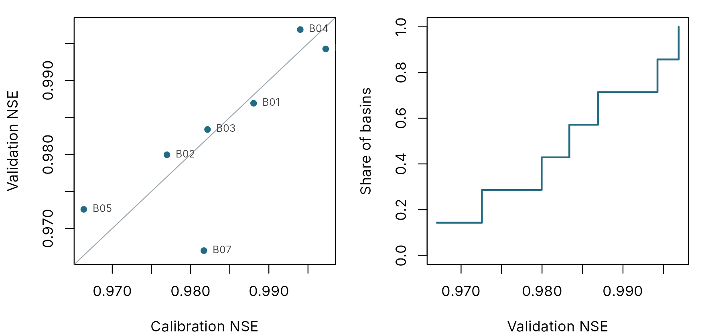
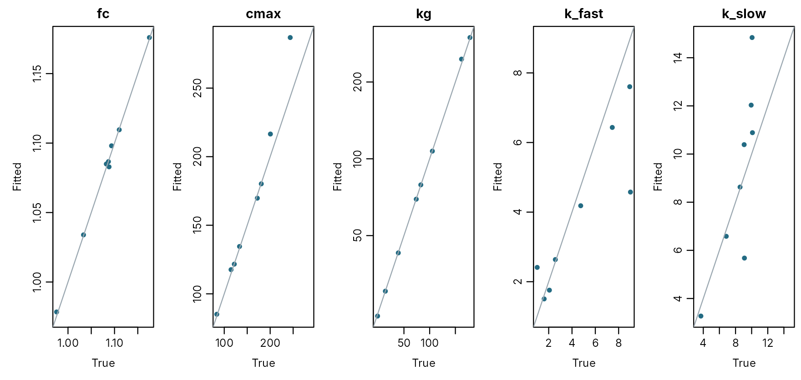

Calibrating many catchments
pdmS7 documentation
Source:vignettes/many-catchments.Rmd
many-catchments.RmdCalibrating one catchment is careful, hands-on work. Calibrating
sixty is a different job: every catchment must be treated the same way,
the run will take hours, something will go wrong part way through, and
the results only mean something when looked at together.
calibrate_batch() does that job. This article shows how to
use it, step by step, and how to read what comes out.
The example runs live on eight made-up catchments. Because we made them up, we know the “true” parameter values, so at the end we can check how close calibration got. A real batch works the same way, only bigger.
What you need: one folder per catchment
Put each catchment in its own folder, named after it, inside one parent folder. Each folder holds three files:
| File | Contents |
|---|---|
forcing.csv |
Columns time, rain and pet:
rainfall and potential evaporation in mm per time step |
flow.csv |
Column q_m3s: the measured river flow, one row per time
step; gaps can be left empty |
basin.yml |
A few lines describing the catchment |
Here we build eight such folders. One of them, B06, has a fault, as real collections often do: a stretch of negative evaporation from a corrupted file.
basins <- file.path(tempdir(), "basins")
set.seed(2024)
n <- 24 * 60
time <- seq(as.POSIXct("2023-10-01", tz = "UTC"), by = 3600, length.out = n)
truths <- list()
for (i in 1:8) {
id <- sprintf("B%02d", i)
folder <- file.path(basins, id)
dir.create(folder, recursive = TRUE)
wet <- stats::runif(1, 0.04, 0.09)
forcing <- data.frame(
time = format(time, "%Y-%m-%dT%H:%M:%SZ"),
rain = ifelse(stats::runif(n) < wet, stats::rgamma(n, 0.7, scale = stats::runif(1, 2, 4)), 0),
pet = round(stats::runif(1, 0.04, 0.09), 3)
)
truth <- pdm_presets("standard")
truth$area_km2 <- round(stats::runif(1, 10, 200))
truth$fc <- stats::runif(1, 0.9, 1.2)
truth$distribution$cmax <- stats::runif(1, 80, 250)
truth$recharge$kg <- exp(stats::runif(1, log(20), log(300)))
k <- sort(stats::runif(2, 1, 12))
truth$surface$k1 <- k[1]
truth$surface$k2 <- k[2]
truths[[id]] <- truth
flow <- run_pdm(pdm_from_config(truth), forcing[, c("rain", "pet")])$output$q_m3s *
exp(stats::rnorm(n, 0, 0.04))
if (id == "B06") forcing$pet[100:110] <- -0.05
data.table::fwrite(forcing, file.path(folder, "forcing.csv"))
data.table::fwrite(data.frame(q_m3s = flow), file.path(folder, "flow.csv"))
writeLines(c(
paste("catchment:", paste("Example", id)),
paste("gauge:", id),
paste("area_km2:", truth$area_km2),
"calibration: [2023-10-11, 2023-11-14]",
"validation: [2023-11-15, 2023-11-29]"
), file.path(folder, "basin.yml"))
}
list.files(basins)
#> [1] "B01" "B02" "B03" "B04" "B05" "B06" "B07" "B08"A basin.yml is short. Only the area and the calibration
period are required:
cat(readLines(file.path(basins, "B01", "basin.yml")), sep = "\n")
#> catchment: Example B01
#> gauge: B01
#> area_km2: 80
#> calibration: [2023-10-11, 2023-11-14]
#> validation: [2023-11-15, 2023-11-29]| Line | Meaning |
|---|---|
area_km2 |
Catchment area, used to turn millimetres into cubic metres per second |
calibration |
First and last date of the period the calibration is fitted to. Anything before it is warm-up: simulated, so the model’s stores settle, but not scored |
validation |
A later period the calibration never sees, used to check the result honestly |
test (optional) |
A final period kept back until everything is decided, scored once |
config (optional) |
A model configuration file in the folder, if this catchment needs a different model |
thresholds, rating (optional) |
Warning thresholds to score; see Scoring a simulation |
Before you start: how long will it take?
Time one model run, then multiply. A calibration of five parameters with three starting points uses roughly 1,000 to 2,000 model runs.
one_run <- system.time(
for (i in 1:20) run_pdm(pdm_from_config(truths$B01), data.frame(rain = 0, pet = rep(0.05, n)))
)[["elapsed"]] / 20
c(seconds_per_run = signif(one_run, 2),
estimated_minutes_for_8 = round(8 * 1500 * one_run / 60, 1))
#> seconds_per_run estimated_minutes_for_8
#> 0.005 1.000For a real batch, measure on a few catchments first; see the pilot script in Calibration.
Running the batch
Say who you are, then give the folder of catchments and a folder for the results. The rest of the settings are the protocol, the same for every catchment: how many starting points, how many steps each search may take, which parameters to leave alone.
options(pdmS7.user = "Ann Hydrologist", pdmS7.role = "custodian")
results <- file.path(tempdir(), "results")
protocol <- list(starts = 3, control = list(maxit = 25),
exclude = c("distribution.b", "groundwater.kb"))
part <- do.call(calibrate_batch, c(list(basins, results, only = c("B01", "B02", "B03")),
protocol))
part
#> basin state step seconds message
#> <char> <char> <char> <num> <char>
#> 1: B01 done complete 4.8
#> 2: B02 done complete 4.3
#> 3: B03 done complete 5.3Suppose the computer was switched off at this point, after three catchments. Nothing is lost: each catchment has its own project folder recording exactly how far it got. Run the same command again, this time for all of them:
elapsed <- system.time(
status <- do.call(calibrate_batch, c(list(basins, results), protocol))
)[["elapsed"]]
status
#> basin state step seconds message
#> <char> <char> <char> <num> <char>
#> 1: B01 done complete 0.0
#> 2: B02 done complete 0.0
#> 3: B03 done complete 0.0
#> 4: B04 done complete 5.1
#> 5: B05 done complete 4.4
#> 6: B06 failed register 0.0 pet must contain finite nonnegative numbers
#> 7: B07 done complete 4.4
#> 8: B08 done complete 5.8The three finished catchments took a moment each: the batch read their records, saw every step already done, and moved on. The others ran in full. Each catchment’s random starting points come from its own name, so B01 gets the same result whether it runs alone or with a hundred others.
While it runs
On a long batch, open a second R session and look at progress at any time:
batch_status(results)It reads batch-status.csv in the results folder, which
records each catchment as queued, running,
done or failed.
When a catchment fails
One catchment failed, and the batch carried on without it:
status[state == "failed", .(basin, step, message)]
#> basin step message
#> <char> <char> <char>
#> 1: B06 register pet must contain finite nonnegative numbersThe message says what is wrong and the step says where it stopped: the data were refused before anything was calibrated. Fix the file and run the batch again for just that catchment:
fixed <- data.table::fread(file.path(basins, "B06", "forcing.csv"))
fixed$pet <- abs(fixed$pet)
data.table::fwrite(fixed, file.path(basins, "B06", "forcing.csv"))
status <- do.call(calibrate_batch, c(list(basins, results, only = "B06"), protocol))
status
#> basin state step seconds message
#> <char> <char> <char> <num> <char>
#> 1: B01 done complete 0.0
#> 2: B02 done complete 0.0
#> 3: B03 done complete 0.0
#> 4: B04 done complete 5.1
#> 5: B05 done complete 4.4
#> 6: B06 done complete 4.7
#> 7: B07 done complete 4.4
#> 8: B08 done complete 5.8The failed attempt is still on record in B06’s project, followed by the successful one.
On a server
On a shared server, put the call in a script and start it so that it keeps running after you log off. Use one core per catchment, up to what the server can spare:
# batch.R
library(pdmS7)
options(pdmS7.user = "Ann Hydrologist", pdmS7.role = "custodian")
calibrate_batch("basins", "results", starts = 20, cores = 32,
owner = "Deputy Director", steward = "Sam Steward")If the server is restarted, run the same command again.
Reading the results
batch_results() gathers every catchment into one table,
with the headline score (here NSE) on the calibration and validation
periods:
table <- batch_results(results)
table[, .(project, state, calibration = round(candidate_score, 3),
validation = round(validation_score, 3))]
#> project state calibration validation
#> <char> <char> <num> <num>
#> 1: B01 done 0.982 0.980
#> 2: B02 done 0.989 0.995
#> 3: B03 done 0.971 0.968
#> 4: B04 done 0.981 0.995
#> 5: B05 done 0.982 0.921
#> 6: B06 done 0.977 0.979
#> 7: B07 done 0.992 0.994
#> 8: B08 done 0.989 0.993
par(mfrow = c(1, 2), mar = c(4, 4.2, 1, 1))
lim <- range(c(table$candidate_score, table$validation_score))
plot(table$candidate_score, table$validation_score, pch = 16, col = pal[1], xlim = lim,
ylim = lim, xlab = "Calibration NSE", ylab = "Validation NSE")
abline(0, 1, col = pal[7])
text(table$candidate_score, table$validation_score, table$project, pos = 4, cex = 0.7,
col = pal[5])
plot(sort(table$validation_score), seq_len(nrow(table)) / nrow(table), type = "s", lwd = 2,
col = pal[1], xlab = "Validation NSE", ylab = "Share of catchments", ylim = c(0, 1))
Left: each catchment’s score on the calibration period against the validation period; points below the line did worse on data the calibration never saw. Right: the share of catchments reaching each validation score.
Report the whole spread, not just the average. The middle says how good the model usually is; the worst few say where it fails, and those are the catchments to look at first.
Did the search find the best answer?
Each calibration started from three different points. If they all ended at the same score, the answer is probably the best there is. If they ended at different scores, the search may have stopped in the wrong place.
agreement <- do.call(rbind, lapply(table$project, function(id) {
fit <- read_entry(file.path(results, id), 4)
scores <- unlist(fit$start_results$objective)
data.frame(basin = id, best = signif(min(scores), 3), worst = signif(max(scores), 3),
finished = sum(unlist(fit$start_results$convergence) == 0))
}))
agreement$agree <- (agreement$worst - agreement$best) < 1e-3
agreement
#> basin best worst finished agree
#> 1 B01 0.01760 0.0176 0 TRUE
#> 2 B02 0.01060 0.1920 1 FALSE
#> 3 B03 0.02910 0.0302 0 FALSE
#> 4 B04 0.01910 0.0633 0 FALSE
#> 5 B05 0.01790 0.0181 1 TRUE
#> 6 B06 0.02260 0.3070 0 FALSE
#> 7 B07 0.00814 0.0260 1 FALSE
#> 8 B08 0.01140 0.0149 1 FALSEfinished counts the starts that ended because they could
improve no further, rather than because they ran out of steps. Where
starts disagree but all finished, the catchment has more than one “best”
answer and needs more starting points. Where they ran out of steps, the
search simply needs longer; this example allows only 25 steps to keep it
quick, and a real batch should allow 200 or more.
Did it find the truth?
Only possible here, because we made the catchments up: compare each fitted value with the true one. The two surface time constants can swap places without changing the flow, so they are compared as the faster and the slower of the pair.
pairs <- do.call(rbind, lapply(table$project, function(id) {
fitted <- read_entry(file.path(results, id), 4)$configuration
value <- function(cfg) {
k <- sort(c(cfg$surface$k1, cfg$surface$k2))
c(fc = cfg$fc, cmax = cfg$distribution$cmax, kg = cfg$recharge$kg, k_fast = k[1],
k_slow = k[2])
}
data.frame(basin = id, parameter = names(value(truths[[id]])), truth = value(truths[[id]]),
fitted = value(fitted))
}))
par(mfrow = c(1, 5), mar = c(4, 4, 2, 0.5), mgp = c(2.2, 0.7, 0))
for (p in unique(pairs$parameter)) {
d <- pairs[pairs$parameter == p, ]
lim <- range(c(d$truth, d$fitted))
plot(d$truth, d$fitted, pch = 16, col = pal[1], xlim = lim, ylim = lim, main = p,
xlab = "True", ylab = "Fitted", log = if (p == "kg") "xy" else "")
abline(0, 1, col = pal[7])
}
Fitted against true values, one point per catchment. Points on the line are exact.
pairs$error <- abs(pairs$fitted / pairs$truth - 1)
typical <- aggregate(cbind(typical_error = error) ~ parameter, data = pairs,
FUN = function(x) round(stats::median(x), 3))
typical
#> parameter typical_error
#> 1 cmax 0.015
#> 2 fc 0.002
#> 3 k_fast 0.142
#> 4 k_slow 0.131
#> 5 kg 0.004
best <- typical$parameter[order(typical$typical_error)]The typical error is the middle value across catchments, as a fraction: 0.01 means 1 per cent out. Here fc and kg come back almost exactly: they control how much water there is and how the river recedes, which every week of record shows. k_fast and k_slow are the furthest out, typically about 14 per cent, partly because this example stops each search after 25 steps, before most of them had finished. In other cases a parameter is badly off even when the fit is excellent, because the data hold little information about it: the size of a soil store that two autumn months never fill, for example.
The lesson for real catchments, where the truth is unknown: a good score does not prove the parameters are right. Longer records, the parameter sensitivity plots in each catchment’s report, and staged calibration all help.
Checking the work
Every catchment’s record can be checked for tampering, and reviewed and signed off like any other calibration (see Logging a manual calibration). Start the review with the worst performers:
folders <- file.path(results, table$project)
table(intact = vapply(folders, function(f) all(verify_project(f)$ok), logical(1)))
#> intact
#> TRUE
#> 8
worst <- table[order(validation_score)][1:5]
for (f in file.path(results, worst$project)) build_report(f)Summary
| Task | How |
|---|---|
| Prepare | One folder per catchment: forcing.csv,
flow.csv, basin.yml
|
| Estimate the time | Time one run; multiply by catchments, starts and about 1,500 runs per calibration |
| Run | calibrate_batch(basins, results, starts = , cores = ) |
| Check progress |
batch_status(results) from another session |
| After a crash or restart | Run the same command again |
| Fix a failure | Correct the data, then
calibrate_batch(..., only = "ID")
|
| Collect | batch_results(results) |
| Review |
verify_project(), build_report() on the
worst first, then sign off |
For many model structures in each catchment rather than one, see Choosing a model structure.